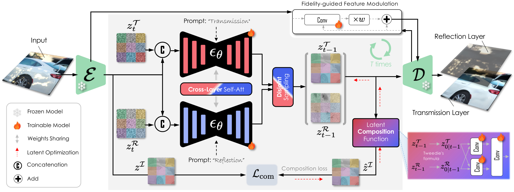
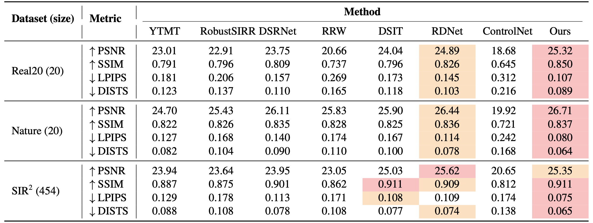
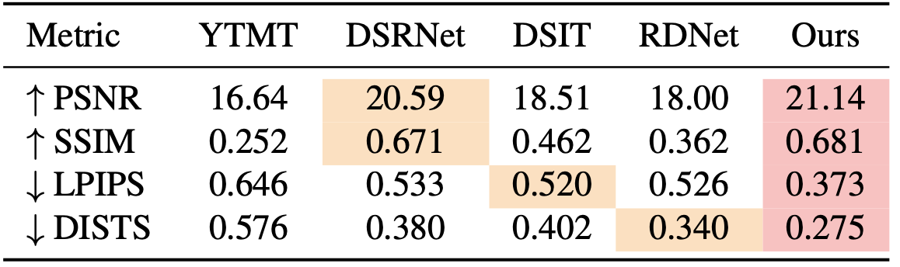

Single-image reflection separation remains challenging due to its ill-posed nature, especially under extreme conditions with strong or subtle reflections. Existing methods often struggle to recover both layers in glare or weak-reflection scenarios because of insufficient information.
This paper presents the first diffusion model explicitly fine-tuned for this task, leveraging generative diffusion priors for robust separation. Our method simultaneously generates transmission and reflection layers through a unified diffusion model, incorporating a novel cross-layer self-attention mechanism for better feature disentanglement. We further introduce a disjoint sampling strategy to iteratively reduce interference between the layers during diffusion and a latent optimization step with a learned composition function for improved results in complex real-world scenarios.
Extensive experiments show our approach achieves superior separation performance on multiple real-world benchmarks and surpasses state-of-the-art methods in both quantitative metrics and perceptual quality.
Click any red dot on the figure for component details.

Algorithm 1 — Latent Optimization (per t mod 5) for t = N, ... , 1 do εT ← εθ(zI, zT, t, cT) εR ← εθ(zI, zR, t, cR) if t mod 5 == 0 then ◄ every 5 steps for k = 1, ... , 4 do ◄ 4 inner steps ẑ₀T ← Tweedie(zT, εT, α̅t) ẑ₀R ← Tweedie(zR, εR, α̅t) ℒ ← ‖zI − C(ẑ₀T, ẑ₀R)‖² ◄ composition loss zT ← zT − γ · ∇zT ℒ zR ← zR − γ · ∇zR ℒ ◄ gradient descent end for end if ε̂T ← εT + w(εT − εR) ε̂R ← εR + w(εR − εT) zT, zR ← DDIM_step(...) end for
Overview of our framework: a unified diffusion model jointly generates the transmission and reflection latents via cross-layer self-attention, disjoint sampling, fidelity-guided feature modulation, and a learned latent composition function.
Drag the slider to compare Ours (right) against the input mixture, ground truth, or state-of-the-art baselines (left). Use the Compare with row to switch the comparison target and Layer to view the transmission or reflection.


Reflection-layer comparison on Real20.
We compare against state-of-the-art baselines on three real-world benchmarks. The best and second-best results are highlighted; lower (↓) is better for LPIPS / DISTS, higher (↑) is better for PSNR / SSIM.
@inproceedings{huang2026reflection,
title={Reflection Separation from a Single Image via Joint Latent Diffusion},
author={Huang, Zheng-Hui and Wang, Zhixiang and Liu, Yu-Lun and Chuang, Yung-Yu},
booktitle={Proceedings of the IEEE/CVF Conference on Computer Vision and
Pattern Recognition (CVPR)},
year={2026}
}